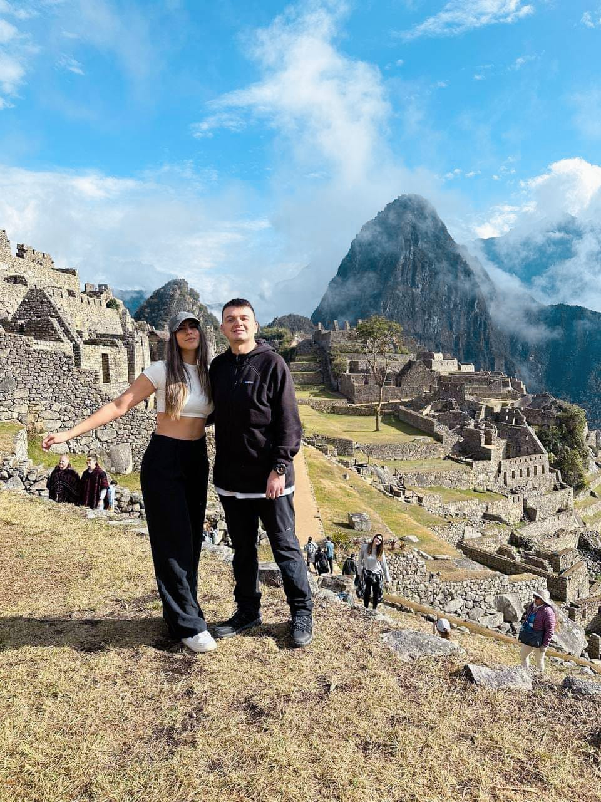

Reserva tu tour a Machu Picchu y explora más experiencias en Perú
- Elige los tours según tus fechas
- Complementa Machu Picchu con experiencias en Cusco y Lima
- Asesoría de expertos locales en Perú
- Acomoda cada fecha a tu itinerario y vuelos
Da el primer paso para tu viaje
Arma tu itinerario eligiendo las experiencias que quieres vivir durante tus días en Perú. Cada tour puede tener su propia fecha.
Añade otras experiencias a tu viaje por Perú
Suma experiencias independientes a tu reserva, cada una con su propia fecha.
Tours según tus fechas
Selecciona cada experiencia de acuerdo con tus días disponibles y tu itinerario de vuelos.
Experiencias en Cusco y Lima
Combina Machu Picchu con otras actividades sin comprar un paquete de hotel obligatorio.
Una reserva y un pago
Organiza todos tus tours con un solo código de reserva y acompañamiento local.
Por qué reservar con My Cusco Trip
Somos un equipo local en Cusco, especializado en Machu Picchu y tours por Perú.
Expertos locales en Cusco
Conocemos de primera mano la operación de trenes, buses y entradas oficiales a Machu Picchu.
Sin compras forzadas
Tú decides qué experiencias sumar. No te obligamos a comprar hospedaje ni paquetes que no necesitas.
Acompañamiento antes de viajar
Verificamos entradas, trenes y operación antes de confirmar tus servicios finales.
Tour Machu Picchu Full Day desde Cusco y experiencias para completar tu itinerario
Esta landing está pensada para viajeros que ya cuentan con hotel o que prefieren organizar sus alojamientos por separado. Puedes reservar el tour Machu Picchu Full Day desde Cusco y añadir otras experiencias turísticas con fechas independientes, sin adquirir un paquete completo de hospedaje.
Entre las opciones disponibles se encuentran Laguna Humantay, Montaña de Colores Vinicunca, Valle Sagrado de los Incas, Bienvenida Ancestral en Cusco, Siete Lagunas del Ausangate, Valle Sur y el full day Paracas, Ica y Huacachina desde Lima. El sistema calcula el total de acuerdo con la cantidad de viajeros y las actividades seleccionadas.
My Cusco Trip revisa la disponibilidad de entradas, trenes, horarios y operación antes de emitir los servicios. También valida que exista tiempo suficiente para trasladarte entre Lima y Cusco cuando combinas experiencias en distintas regiones del Perú.
Preguntas frecuentes
¿Tengo que comprar hospedaje para reservar Machu Picchu?
No. Esta reserva es solo de tours. Puedes empezar con Machu Picchu Full Day y sumar Laguna Humantay, Montaña de Colores, Valle Sagrado, Bienvenida Ancestral, Siete Lagunas del Ausangate, Valle Sur o Paracas-Ica-Huacachina. No incluye ni exige hotel.
¿Puedo elegir una fecha distinta para cada tour?
Sí. Cada tour que agregues tiene su propio selector de fecha, independiente de los demás.
¿Puedo combinar Machu Picchu con Paracas, Ica y Huacachina?
Sí, pero como uno sale desde Cusco y el otro desde Lima, necesitas al menos un día libre para el traslado entre ambos destinos. El sistema valida esto automáticamente al elegir tus fechas.
¿Qué tours puedo añadir durante mis días en Cusco?
Puedes añadir Laguna Humantay, Montaña de Colores Vinicunca, Valle Sagrado de los Incas, Bienvenida Ancestral, Siete Lagunas del Ausangate o Valle Sur. Cada experiencia tiene su propia fecha y precio por persona.
¿Puedo organizar los tours según mis vuelos y noches de hotel?
Sí. El objetivo de esta modalidad es que acomodes cada experiencia a los días que ya tienes disponibles, sin obligarte a comprar alojamiento. Nuestro equipo revisará los tiempos de traslado y la viabilidad operativa antes de emitir.
¿La comida está incluida en Machu Picchu Full Day?
No de forma automática. Puedes elegir sin almuerzo, almuerzo estándar o el buffet Tinkuy en Belmond Sanctuary Lodge, cada uno con su propio costo por persona.
¿Cuándo se confirman las entradas, trenes y horarios?
Las fechas y horarios están sujetos a disponibilidad. Nuestro equipo verifica entradas oficiales, trenes y operación antes de emitir los servicios.
¿Puedo aplicar un cupón de descuento?
Sí, si cuentas con un código de descuento válido, puedes ingresarlo en el resumen de tu reserva antes de continuar.
Arma tu viaje por Perú hoy mismo
Empieza con Machu Picchu y suma las experiencias que quieras, todo en una sola reserva.